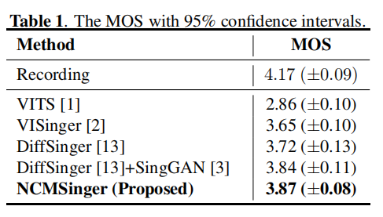

NCMSinger: MEL-CONSTRAINED VITS WITH PROSODY MODELING FOR SINGING VOICE SYNTHESIS
Paper link: XXX.com
Authors
- Author1 (NetEase Cloud Music) Author1@corp.netease.com
- Author2* (NetEase Cloud Music) Author2@corp.netease.com
- Author3 (NetEase Cloud Music) Author3@corp.netease.com
- Author4 (NetEase Cloud Music) Author4@corp.netease.com
- Author5 (NetEase Cloud Music) Author5@corp.netease.com
Abstract
The abstract should appear at the top of the left-hand columnof text, about 0.5 inch (12 mm) below the title area and nomore than 3.125 inches (80 mm) in length. Leave a 0.5 inch(12 mm) space between the end of the abstract and the be-ginning of the main text. The abstract should contain about 100 to 150 words, and should be identical to the abstract text submitted electronically along with the paper cover sheet. All manuscripts must be in English, printed in black ink.
Contents
Audio Samples1.1 Audio Quality
1.2 long music score synthesiszed
Ablation Studies
2.1 NCMSinger/Without prosody/Without Mel-Decoder/Without SingGAN
2.2 Convergency
Audio Samples
音频样例说明.
Audio Quality
| Record | VITS | VISinger | DiffSinger | DiffSinger+SingGAN | NCMSinger |
|---|---|---|---|---|---|
| 红豆-王菲 | |||
|---|---|---|---|
| 风中有朵雨做的云-孟庭苇 | |||
| 孤勇者-陈奕迅 | |||
| 美丽的草原我的家-德德玛 | |||

| Without SingGAN | Without Mel-Decoder | Without prosody | NCMSinger |
|---|---|---|---|

| VISinger 200k | VISinger 600k | NCMSinger 200k | NCMSinger 600k |
|---|---|---|---|